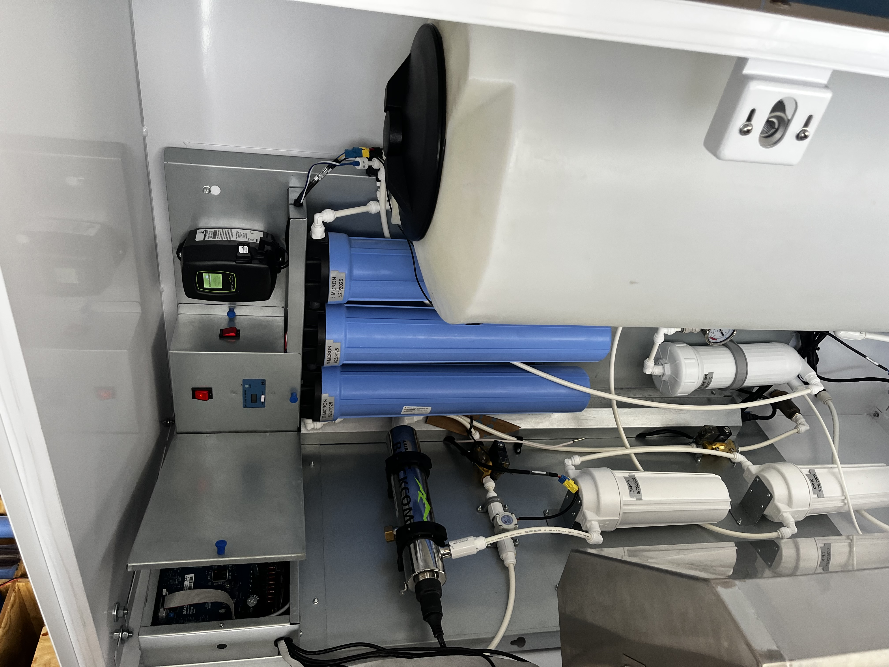

01 / OVERVIEW
Hands-On Engineering

As a Mechanical Engineering Intern at SafeWater LLC, I worked directly with commercial water vending and filtration machines, combining mechanical repair, system troubleshooting, CAD, electrical work, and documentation.
I helped restore and refurbish approximately 25 machines that use multi-stage filtration and purification systems to remove contaminants and improve water quality. The work required understanding how mechanical, fluid, electrical, and electronic systems interacted as a complete machine.
This experience gave me the opportunity to work directly with physical hardware from diagnosis through repair, modification, testing, and documentation.
02 / MACHINE REFURBISHING
Rebuilding Real Hardware
Commercial Water Filtration Systems
Refurbished approximately 25 commercial water filtration machines by diagnosing failed components, restoring filtration systems, replacing worn hardware, and verifying machine operation.
The systems incorporated pumps, solenoid valves, reverse osmosis membranes, ultraviolet sanitation, float sensors, flow controllers, filters, microcontrollers, and printed circuit boards.
I worked through the machines systematically, identifying failed or degraded components and determining whether components should be repaired, replaced, or redesigned.
APPROXIMATELY 25 MACHINES REFURBISHED
03 / DESIGN & CAD
Designing Replacement Hardware
SolidWorks Assemblies
Created and modified SolidWorks assemblies to document machine configurations and support the development of replacement and custom components.
Custom Components
Designed custom parts and hardware to address machine repair and refurbishment requirements when existing components were unavailable or unsuitable.
Engineering Drawings
Developed engineering drawings and supporting documentation for custom and replacement components.
04 / ELECTRICAL & CONTROLS
Mechanical Systems Meet Electronics
The machines combined mechanical components with electronic controls, requiring troubleshooting across both sides of the system.
Soldering & PCB Work
Performed soldering and electrical repair work on printed circuit boards and electronic components used within the machines.
Microcontroller Programming
Programmed machine control parameters including volumetric flow rates and automatic shut-off times.
System Troubleshooting
Diagnosed interactions between sensors, valves, pumps, controllers, and electrical systems to identify the root causes of machine failures.
05 / DOCUMENTATION
Building a Better Process
In addition to working directly on the machines, I helped establish a more structured refurbishment process for the company.
Standard Operating Procedures
Developed standard operating procedures and manuals to document machine refurbishment and maintenance processes.
Refurbishment System
Helped create a more consistent refurbishment system for evaluating, repairing, documenting, and returning machines to service.
06 / TOOLS & SKILLS